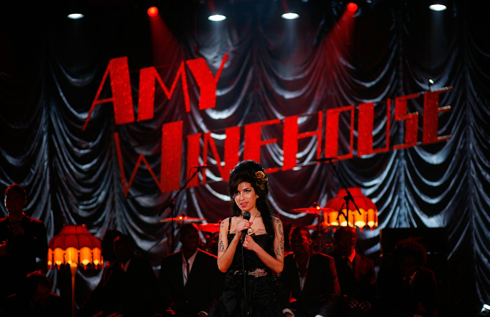

English singer and songwriter known for her deep, expressive contralto vocals.

The singer Amy Winehouse on stage in London, 2008.
Amy Winehouse timeline: 1983-2011
1983 - Amy Jade Winehouse is born to Mitch, a taxi driver, and Janis, a pharmacist in Southgate, London.
1993 - Winehouse attends the Susi Earnshaw Theatre school. In the same year her parents split up and Winehouse stays with her mother.
1994 - She forms rap duo with friend called Sweet 'n' Sour, inspired by Salt-N-Pepa.
1996 - Winehouse is awarded place at Sylvia Young Theatre School, but is later expelled for "not applying herself".
1998 - The singer briefly attends BRIT School, and starts writing and performing with jazz band.
2002 - She signs with Simon Fuller's management company 19 Entertainment, then Island Records.
2003 - Winehouse releases her debut album, Frank. It goes platinum in the UK, and she wins an Ivor Novello award for song-writing. She also begins an on-off relationship with Blake Fielder-Civil.
2006 - Winehouse releases Back to Black, which centres around relationship with Fielder-Civil. It becomes the best selling album in the UK the following year, selling around 1.85m copies.
2007 - Back To Black enters US Billboard and becomes the highest debut for UK female. She marries Fielder-Civil and is hospitalised with "exhaustion", cancelling her US tour.
2008 - Winehouse goes into rehab after photos of her alleged drug use are published. In the same year she is arrested twice, but gives a triumphant performance at the Grammys and wins five awards.
2009 - Winehouse heads to St Lucia for a two-month holiday but is arrested for allegedly punching a fan at a Society Ball in London. Later in the year she is charged with a public order offence and common assault after allegedly attacking a theatre manager during a family production of Cinderella. Her parents make a public plea to try to get their daughter the help she needs. After well-publicised fights and arrests, Winehouse and Blake Fielder-Civil officially divorce.
2010 - Winehouse says her third album will be released in January, and collaborates with Mark Ronson on the Quincy Jones tribute album Q Soul Bossa Nostra.
2011 - After a mini-tour of Brazil, Winehouse returns to rehab. After a performance in Serbia where Winehosue is too drunk to perform, her European tour is cancelled. On 23 July she is found dead in her London home.
"Winehouse was immediately distinctive, both in terms of music – in an era dominated by girl and boy bands hers was an incredible, authentic and big-selling jazz voice carrying the most original lyrics out – and style, with her winged eyeliner, beehive hair and growing collection of tattoos." - Classic FM
If you have time, you should read more about this incredible singer on his Wikipedia entry.